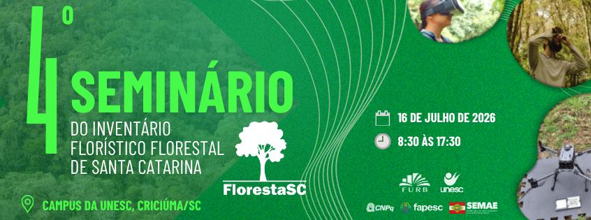
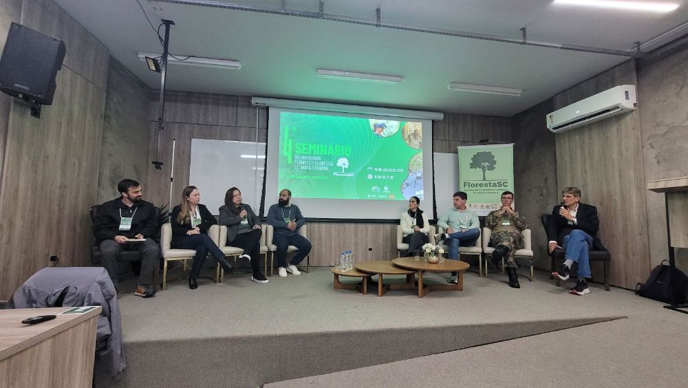

4° Seminário do FlorestaSC divulga os resultados das últimas atividades de pesquisa
22 de Julho de 2026
Esta parte da página usa um recurso interativo do Google Sites que não pôde ser copiado. Ver no site atual ↗

O 4º Seminário do FlorestaSC ocorreu na última quinta-feira (16/07/2026), trazendo muitas informações e resultados das últimas atividades de pesquisa do FlorestaSC, com foco na aplicação de novas tecnologias. O evento foi realizado no Campus da UNESC, Auditório Edson Rodrigues (UNESC), em Criciúma - SC, podendo ser acompanhado de forma presencial ou online.
A programação do seminário contou com palestras, mesas-redondas e exposição.
Nas palestras foram abordados os achados do projeto sobre o efeito das mudanças do clima na flora catarinenses, dinâmica da cobertura e de atributos florestais, monitoramento da floresta com uso de drone e técnicas de IA. Além disso, pesquisadoras da UNESC e UFSC apresentaram seus estudos de pós-graduação, discorrendo sobre temas como flora de escarpas e efeitos dos impactos antrópicos e práticas indígenas históricas na flora catarinense.
Confira no carrossel de imagens, os registros das palestras do 4º Seminário do FlorestaSC.
Nas mesas-redondas foram discutidos o uso de dados do FlorestaSC e novas perspectivas para o programa. Foram realidas duas mesas-redondas, intituladas:
- Ferramentas para acesso, uso e aplicação dos dados do FlorestaSC
- Impacto do FlorestaSC nas políticas públicas de SC e perspectivas do programa
Ademais, as mesas-redondas contaram com a participação das seguintes autoridades: Gabriela Brasil e Robson Cunha da Secretaria de Estado do Meio Ambiente e da Economia Verde (SEMAE - SC), Cristiane Vargas e Dayane Laurentino do Instituto do Meio Ambiente (IMA - SC), Daniel da Silva da Empresa de Pesquisa Agropecuária e Extensão Rural de Santa Catarina (EPAGRI), Major Paulo Ern da Polícia Militar Ambiental (PMA) e Ivan Xavier da Associação de Engenheiros Florestais do Vale do Itajaí (AEFVALE).

Nos intervalos, os participantes do evento ainda puderam prestigiar a Demonstração de Aplicativos de realidade virtual, cuja exposição foi conduzida pelos pesquisadores MSc. Nando Rocha e Msc. Débora Lingner. Também estavam expostos para apreciação dos participantes, os banners que compõem a Exposição Itinerante Nossas Florestas, uma das iniciativas de educação florestal do programa.
Se você perdeu o evento ou simplesmente quer rever todos os detalhes, a gravação completa do evento está disponível aqui:
Aplivativos de realidade virtual do FlorestaSC: uma inovação para a educação florestal
19 de Maio de 2026
E se um aplicativo proporcionasse a sensação de estar dentro do tronco oco de uma araucária centenária?
E se você pudesse interagir com uma árvore em 3D no seu celular?
E que tal um desafio tipo “Pokémon GO” na floresta?
Essas e outras experiências interativas são possíveis através dos três aplicativos desenvolvidos a partir de uma parceria entre o FlorestaSC e o LDDT - Laboratório de Desenvolvimento e Transferência de Tecnologia da FURB.
Assista ao vídeo e conheça os aplicativos
Entre 2024 e 2026, os aplicativos foram concebidos sob o subprojeto FlorestaSC: divulgação científica sobre florestas utilizando tecnologias digitais baseadas em realidade virtual, aumentada e alternativa. O subprojeto foi coordenado pelo Prof. Dr. Maurício Capobianco Lopes e financiado pela FAPESC.
Os aplicativos foram desenvolvidos com foco em Educação Florestal e Divulgação Científica, com o intuito de:
- Fortalecer ações educativas para disseminar conhecimentos sobre as florestas catarinenses;
- Incentivar a conexão das pessoas com as florestas;
- Valorizar as Unidades de Conservação como espaços de aprendizagem.
Os aplicativos estão disponíveis na Google Play para download e são compatíveis para uso em aparelhos Android .
Conheça a seguir os três aplicativos:
🔷️ FlorestaSC RA: app de realidade aumentada que permite interações com folhetos explicativos sobre a floresta. [DOWNLOAD]
🔷️ FlorestaSC RVi: app de realidade imersiva que promove a imersão no parque Floresta Rene Frey (Fraiburgo/SC). [DOWNLOAD]
🔷️ FlorestaSC na Trilha: app de realidade alternativa para ser utilizado durante a visitação ao Parque São Francisco de Assis (Blumenau/SC), promovendo aprendizagens ao longo da trilha. [DOWNLOAD]
FlorestaSC: a estratégia que revelou 2.871 espécies da flora catarinense
10 de Março de 2026
Como saber, de verdade, quantas plantas vivem nas florestas de Santa Catarina?
Essa pergunta, que parece simples, é um dos maiores desafios de quem estuda a biodiversidade. Um novo artigo do programa FlorestaSC, publicado na revista científica Forest Ecology and Management, mostra que a resposta depende de como a gente olha para a floresta — e que olhar de duas formas ao mesmo tempo faz toda a diferença.
Duas maneiras de olhar a mesma floresta
Há 18 anos, o FlorestaSC percorre todo o estado seguindo uma grade sistemática de pontos de coleta, distribuídos em centenas de unidades amostrais espalhadas por todas as regiões de Santa Catarina. Em cada ponto, a equipe faz dois trabalhos complementares:
- O inventário florestal, que mede e identifica as árvores e arbustos maiores (com tronco a partir de 10 cm de diâmetro). É o retrato da estrutura da floresta.
- O levantamento florístico, que coleta todo material fértil encontrado — não importa se é uma árvore enorme, uma erva do chão, uma trepadeira ou uma epífita agarrada num galho lá no alto.
A grande sacada do programa é justamente combinar os dois. O inventário sozinho enxerga bem as árvores, mas deixa escapar boa parte da diversidade. O levantamento florístico entra para preencher esse vazio.
O que os números mostram?
Somando os dois métodos, o FlorestaSC documentou 2.871 espécies de plantas vasculares — cerca de 44% de toda a flora conhecida do estado. E aqui está o ponto mais interessante:
O inventário florestal registrou 918 espécies de árvores e arbustos.
O levantamento florístico registrou 2.679 espécies, quase o triplo.
Apenas 726 espécies apareceram nos dois métodos. Outras 1.953 só foram encontradas pelo levantamento florístico, e 192 só pelo inventário.
Ou seja: se o programa tivesse contado apenas com o inventário tradicional, teria deixado de fora a maioria das plantas. Ervas, epífitas e trepadeiras — formas de vida quase sempre ignoradas nos inventários convencionais — responderam por boa parte das coletas, mostrando que floresta não é só feita de árvores.
A demora na identificação
Descobrir uma planta no campo é só o começo. Dar nome a ela — identificar a espécie com segurança — pode levar anos. No FlorestaSC, o tempo médio entre coletar e identificar uma espécie foi de cerca de dois anos. Algumas famílias notoriamente difíceis, como Asteraceae, Bromeliaceae e Orchidaceae, podem exigir mais de uma década de trabalho especializado.
Isso é parte da natureza do trabalho taxonômico. E é por isso que voltar aos mesmos pontos de tempos em tempos é tão importante. Só o segundo ciclo de medições acrescentou 278 espécies que ainda não tinham sido registradas.
A biodiversidade vai sendo revelada aos poucos, à medida que o esforço continua.
Um legado que fica guardado
Todo esse material vira coleção permanente no Herbário Dr. Roberto Miguel Klein (FURB), em Blumenau. As coletas do FlorestaSC já representam cerca de 40% de todo o acervo do herbário, e dezenas de espécies só estão documentadas ali graças ao programa. Esses registros, fotografados e digitalizados, ficam disponíveis para pesquisa e conservação em todo o mundo.
Por que isso importa?
Conhecer o que existe é o primeiro passo para conservar. Ao juntar inventário e coleta florística, repetir as medições ao longo do tempo e investir na identificação cuidadosa das espécies, o FlorestaSC construiu uma base de dados robusta sobre uma das florestas mais ricas e ameaçadas do planeta — a Mata Atlântica. É um lembrete de que monitorar a biodiversidade é uma maratona, não uma corrida de cem metros: quanto mais longo e cuidadoso o olhar, mais completa fica a fotografia.
FlorestaSC
florestasc@furb.br 47 3221-6100
Página migrada de floresta.sc.gov.br.